Name, Path, And Export Mapping
axklib keeps technical identifiers and sampler-facing display names separate.
Technical identifiers make rows stable in CSV/JSON reports. Display names make
info output and export folders match the sampler navigation model.
Text Encodings
CLI arguments and JSON text are UTF-8 on every platform. Unix rejects malformed
argument byte sequences before parsing; Windows receives UTF-16 through
wmain, rejects lone surrogates, and converts to UTF-8 without using the active
code page. C++ SDK path inputs are UTF-8 std::string values. Invalid text and
embedded NUL path values are rejected before filesystem access.
Native filesystem paths and UTF-8 display/manifest text use explicit conversion adapters. axklib does not normalize, case-fold, or transliterate Unicode, so canonically equivalent names remain distinct. Path sanitization is a separate operation from encoding validation. Yamaha on-disk name fields retain their documented ASCII/byte decoding rules and are not interpreted as arbitrary UTF-8.

Naming Layers
| Layer | Example | Purpose |
|---|---|---|
| Container raw path | p0:sfs23, BANK001.003, 8F6EB510/F001/PROG/F003 |
Stable technical identity. |
| Object header name | 001, CFIII DrkTmprd, TS-KICK |
Name stored in the object payload header. |
| Program display name | 001: CFGngDrk |
Slot plus Program name read from PROG+0x078..0x07f. |
| Sample Bank Group display | B TS-KICK |
User-facing rendering of an SBAC object. |
| Sample Bank display | TS-KICK |
User-facing rendering of an SBNK object. |
| Waveform display | TS-KICK |
Physical SMPL storage name when waveform context is requested. |
Object Type Labels
info renders object types with labels so similarly named objects can be
distinguished.
| Object or node | Display label |
|---|---|
| partition | [PARTITION] |
| volume | [VOLUME] |
| category | [CATEGORY] |
PROG |
[PROGRAM] |
SBAC |
[SAMPLE BANK GROUP] |
SBNK |
[SAMPLE BANK] |
SMPL |
[WAVEFORM] |
SEQU |
[SEQUENCE] |
| unresolved Program placeholder | [UNKNOWN] |
Program Slot Labels
Program object header names are usually three-digit slot IDs. axklib renders Program slots as:
NNN: <program display name>
The display name is read from PROG+0x078..0x07f. If the display name is empty
and the object header name is a valid slot number from 1 through 128, axklib
renders:
NNN: Pgm NNN
Default empty Program slots are omitted from normal info output. Use
--show-default-programs to render the full 128-slot list.
Sample Bank Group And Member Levels
SBAC is rendered as the sampler-visible B <name> parent. Its SBNK children
are rendered below it when the relationship is a navigable SBAC_SLOT_TO_SBNK
row.
Example:
|-- Sample Banks [CATEGORY]
| `-- B TS-KICK [SAMPLE BANK GROUP]
| `-- TS-KICK [SAMPLE BANK]
Program assignments to a Sample Bank Group display the group, not the underlying physical waveform objects:
|-- 001: TSUYOSHI [PROGRAM]
| `-- B TS-KICK [SAMPLE BANK GROUP] - Rch Assign: =SMP
SBNK -> SMPL links are waveform-storage links. They are used by reports,
validation, and exact export metadata, but they are not displayed as normal
Program assignment children by default.
SFS Paths
SFS paths come from directory entries:
partition -> volume -> category -> object entry
The SFS reader uses directory placement for volumes and categories. Report rows also keep SFS ID, payload offset, and match method fields.
User-facing SFS tree shape:
|-- partition 0: Main [PARTITION]
| |-- Piano Volume [VOLUME]
| | |-- Programs [CATEGORY]
| | | `-- 001: Grand [PROGRAM]
| | `-- Sample Banks [CATEGORY]
| | `-- B Grand Bank [SAMPLE BANK GROUP]
FAT12 Floppy Paths
FAT12 floppy object placement starts at the root directory filename. The FAT filename is a technical field; the sampler-facing object name comes from the object payload.
fat_file: SINE____.003
object header name: SineWave
info label: SineWave [SAMPLE BANK]
Normal floppy tree shape:
|-- FAT root [VOLUME]
| |-- Sample Banks [CATEGORY]
| | `-- SineWave [SAMPLE BANK]
| `-- Waveforms [CATEGORY]
| `-- SineWave [WAVEFORM]
CD-ROM Paths
CD-ROM images keep raw ISO folder identity and sampler-facing labels together.
raw path: 8F6EB510/F001/PROG/F003
facing path: ORGANS/Or11 Argent/Programs/003: Arg Per4
Display label precedence:
- Decoded CD-ROM menu label stored in the ISO.
- Content-derived fallback from a visible object in the raw folder.
- Raw ISO folder name.
If the same display label appears more than once in a group, axklib appends the raw volume suffix:
Or11 Argent (F001)
Or11 Argent (F002)
Content Tree Sorting
Within a category, nodes sort by:
- unresolved Program placeholders when
--show-unresolvedis active; - category order: Programs, Sample Banks, Waveforms, Sequences;
- Program slot number;
- display name;
- object type;
- object key.
This keeps Program slots numerically stable and makes missing active targets visible before normal Program children when explicitly requested.
Program Assignment Details In info
Normal info output prints assignment details only for displayed active Program
children:
|-- 001: TSUYOSHI [PROGRAM]
| |-- B TS-BASS [SAMPLE BANK GROUP] - Rch Assign: =SMP
| `-- TS-FX 7 [SAMPLE BANK] - Rch Assign: =SMP
Visible/off rows and duplicate-not-active rows are not printed as active Program children. They remain in relationship CSV/JSON reports.
When --show-unresolved is used, active missing local targets appear as Unknown
placeholders:
|-- 009: India [PROGRAM]
| |-- INDIAN 7 [UNKNOWN]
| `-- B India [SAMPLE BANK GROUP] - Rch Assign: =SMP
Export Path Sanitization
Export paths use sampler-facing names, sanitized for normal filesystems.
Rules:
| Input shape | Path behavior |
|---|---|
| Empty name | Replaced with a fallback such as sample or unknown_volume. |
Invalid path characters < > : " / \ | ? * |
Replaced with _. |
| Control characters | Replaced with _. |
| Repeated whitespace | Collapsed to one space in display-path components. |
| Trailing duplicate stars | Converted to numeric suffixes by default: * -> (2), ** -> (3). Rendered stereo stems can use an owning sample-bank/group label instead when that is clearer. |
Repeated _ |
Collapsed. |
Leading/trailing dots, spaces, _ |
Trimmed from path components. |
Exact Export Layout
Scoped extraction writes one shared sample pool plus folders for the selected
scope. Use extract wav file or extract sfz file for whole-input
exports. Use narrower scopes with --path values copied from
info --format paths.
Typical whole-input export layout:
<output>/
_samples/
physical/
Grand C4__a1b2c3d4e5f6.wav
rendered/
Grand Stereo__b1c2d3e4f5a6.wav
file/
source-image/
partition-or-group/
volume/
volume.axklib.json
Instrument.sfz
Typical scoped Program export layout:
<output>/
_samples/
physical/
rendered/
program/
partition_00_Main/
Piano Volume/
Programs/
001_ Grand/
Grand.sfz
Rules:
| Output | Rule |
|---|---|
_samples/physical/ |
Contains exact physical mono WAV files. |
_samples/rendered/ |
Contains interleaved stereo WAVs when a compatible pair is rendered. |
file/<source>/.../ |
Whole-input selection hierarchy, retaining the source name and decoded volume placement. |
<scope>/<selector>/ |
Narrow selected scope folder. |
volume.axklib.json |
Per-volume object and relationship graph written by both WAV and SFZ extraction. |
Physical WAV names come from SMPL storage names plus a short content hash so
several selections can share one pool without collisions. They stay
storage-facing even when that produces a filesystem-safe numeric suffix from a
sampler duplicate marker. When a physical waveform is referenced by
sampler-visible SBNK members, the graph records those member names in the
user_facing_aliases field on the SMPL object. Display-oriented consumers
should use the first alias when present and fall back to the physical SMPL
display name only when no alias is known.
The suffix is the first 12 lowercase hexadecimal characters of SHA-1 over the complete emitted WAV container bytes. This 48-bit suffix is retained as an export-layout compatibility rule, not for security or as sampler metadata. A single export plan reuses a path only when the full digest and WAV bytes match; if distinct contents ever share the same shortened path, export fails clearly instead of overwriting or choosing an order-dependent name.
Rendered stereo names come from sampler-facing sample/member names when a known
stereo relationship supplies a better musical label. For paired sibling SBNK
stereo, terminal -L and -R are removed from the rendered stem, so
Grand -L and Grand -R render as Grand.wav while both physical SMPL WAVs
remain present. If the paired member name is only distinguished by a sampler
duplicate marker, the rendered stem uses the owning B ... sample-bank or group
label when available, for example Harpsi 2.1N - Harpsich031.wav instead of a
numeric duplicate suffix.
Technical Fields That Stay In Reports
Normal CLI text leads with sampler-facing names. These fields remain available in CSV/JSON reports for traceability:
| Field family | Examples |
|---|---|
| SFS placement | partition_index, sfs_id, payload_offset, object_offset. |
| FAT placement | fat_file, fat_directory_offset, fat_first_cluster, fat_cluster_count. |
| ISO placement | iso_raw_group, iso_raw_volume, iso_extent_sector, iso_data_offset. |
| Relationship diagnostics | basis, raw_fields, candidate object keys, assignment row bytes. |
| Quality labels | quality, match_quality, placement_quality. |